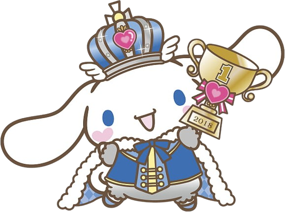

CINNAMONROLL
"Cinnamoroll is Cafe Cinnamon's official mascot. He is quite shy, but very friendly, and sometimes takes a nap on customers' laps. He can fly through the air by flapping his huge ears."
Cinnamonroll's GOODIES



"Cinnamoroll is Cafe Cinnamon's official mascot. He is quite shy, but very friendly, and sometimes takes a nap on customers' laps. He can fly through the air by flapping his huge ears."
Cinnamonroll's GOODIES